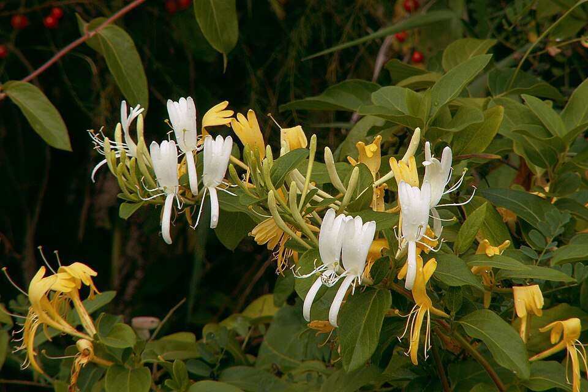
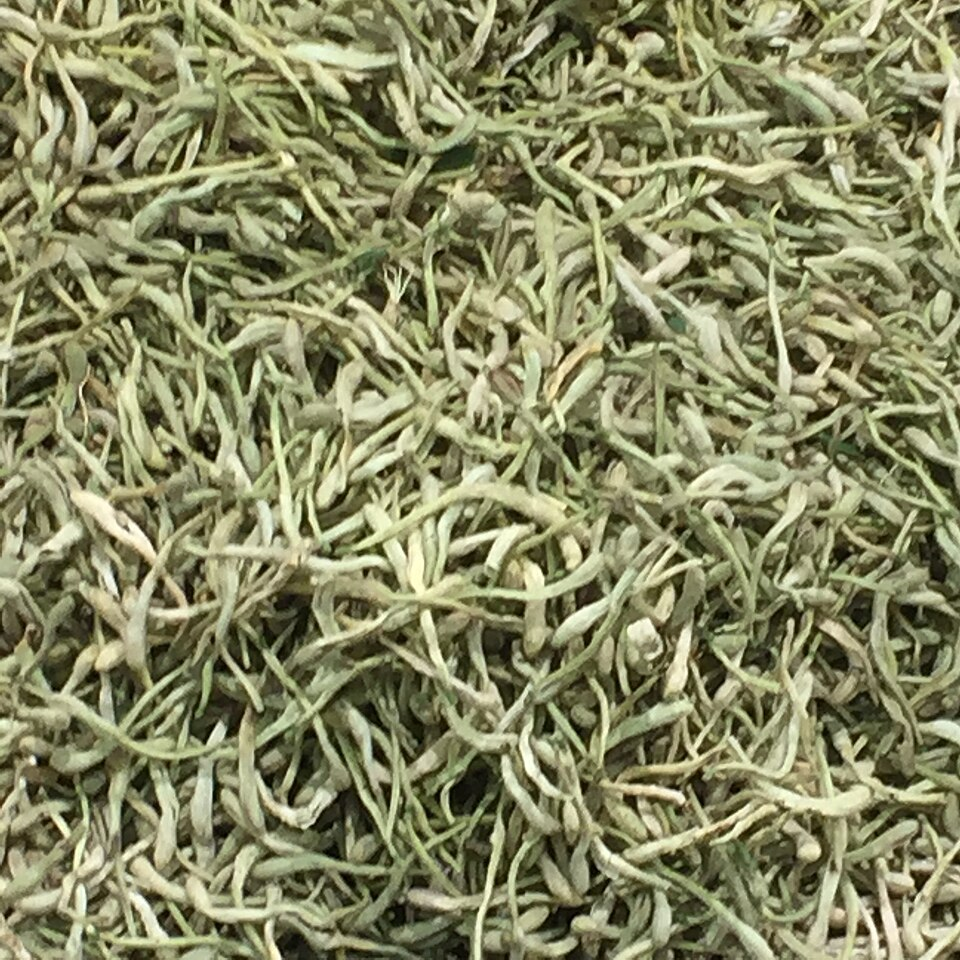

Jīnyínhuā · Japanese Honeysuckle Flower金银花
Lonicerae Japonicae Flos · Heat-clearing herbs: herbs that clear heat and resolve toxinsLonicerae Japonicae Flos · 清热药·清热解毒药




- Flavour · nature性味
- sweet; cold甘，寒
- Channels归经
- Lung, Heart, Stomach肺、心、胃经
- Direction升降浮沉
- Cold in nature and aromatic, it clears heat without being excessively harsh and also disperses wind-heat. It acts on both qi-level heat and heat toxins, combining internal heat-clearing with outward dispersal.性寒，清热而不峻烈，气味芳香，兼能疏散风热；既可清气分热，也可清热解毒，具有清中寓散的特点。
- Toxicity毒性
- Non-toxic无毒
- Dose (pharmacopoeia)用量（药典）
- 6–15 g (ceiling 15 g)（上限 15 克）
Taken as a decoction. Dried flower buds or flowers just beginning to open are used. The actual dose should be determined according to the presenting pattern, formula composition and patient circumstances; the pharmacopoeial range is not an individual prescription.煎服。以干燥花蕾或初开的花入煎剂。临床应根据证候、配伍及患者情况确定具体用量，不应将药典常规剂量理解为适用于所有人的个人处方。 - Pregnancy孕期
- Caution in pregnancy孕妇慎用 Health Canada's TCMI monograph explicitly requires relevant honeysuckle products to carry a warning against use during pregnancy and breastfeeding. Traditional pharmacopoeial use does not override this regulatory warning. Do not self-administer Jin Yin Hua or natural health products containing it during pregnancy or breastfeeding; any proposed medical use requires assessment by a qualified healthcare professional.加拿大卫生部TCMI专论明确要求相关金银花产品标注孕期及哺乳期勿用。传统药典用药经验不能替代这一监管警示。孕期及哺乳期不应自行服用金银花或含金银花的天然保健品；如涉及医疗用途，应由合资格医务人员评估。
- Health Canada加拿大卫生部
- Health Canada: monograph加拿大卫生部：有专论 Health Canada's Natural Health Products Ingredients Database (NHPID) TCMI monograph, dated May 29, 2026, lists Lonicera japonica (Jin yin hua, Flos Lonicerae Japonicae) in Table 1, General Medicinal Ingredients. This listing means that a monograph entry exists; it does not mean that every honeysuckle product has been licensed for sale in Canada. The monograph requires relevant products to state that they must not be used during pregnancy or breastfeeding; people taking prescription medicines or living with serious illness or an acute infection should consult a healthcare professional before use; and use should be discontinued with medical attention if symptoms persist or worsen. This ingredient is listed in Table 1, not Tables 3 or 4, and restrictions specific to those other tables should not be incorrectly applied to this entry.加拿大卫生部天然保健品成分数据库（NHPID）TCMI专论，May 29, 2026，收录Lonicera japonica（Jin yin hua，Flos Lonicerae Japonicae），列于Table 1：general medicinal ingredients。该收录表示该成分具有相应的专论资料，不代表任意金银花产品均已获得加拿大上市许可。专论要求相关产品标注：孕期或哺乳期勿用；正在服用处方药、有严重疾病或急性感染者，使用前咨询医务人员；症状持续或加重时停止使用并就医。该条收录于Table 1，而非Table 3或Table 4，不应将其他表格的限制条件错误套用于本条。
- Conservation资源与保护
- The medicinal source of Jin Yin Hua is Lonicera japonica Thunb. The supplied sources do not identify it as a prohibited or specially CITES-controlled medicinal material such as rhinoceros horn, tiger bone, pangolin scales, musk, or bear bile. Wild harvesting and cultivated supply must comply with applicable local plant conservation, collection and trade regulations; its specific conservation classification and current wild-resource status require verification.金银花的药用基原为忍冬（Lonicera japonica Thunb.）。本条所提供的来源未显示其属于犀角、虎骨、穿山甲、麝香、熊胆等禁用或受国际贸易公约特别管制的药材。野生采集及栽培供应应遵守所在地植物保护、采集与贸易规定；具体保护级别及野生资源现状待核。
- Source来源
- Lonicera japonica Thunb.. Dried flower buds or flowers just beginning to open of Lonicera japonica Thunb., family CaprifoliaceaeLonicera japonica Thunb.（忍冬）。忍冬科植物忍冬的干燥花蕾或带初开的花
Traditional actions and indications功效与主治（传统）
🏛 Traditional statements, not efficacy claims; the modern evidence is graded further down.以下为传统说法，不是疗效主张；现代证据见下文分级。
- Clears heat and resolves toxins清热解毒
- Disperses wind-heat疏散风热
Used for abscesses, boils, sore throat, erysipelas, dysentery with heat toxins in the blood, wind-heat common cold and febrile warm diseases. Traditional pattern-based applications include painful inflammatory swellings caused by accumulated heat toxins, sore throat, and early wind-heat or warm-disease presentations with fever and headache.用于痈肿疔疮、喉痹、丹毒、热毒血痢、风热感冒、温病发热。临床辨证常用于热毒壅盛所致的疮疡肿痛、咽喉肿痛，以及外感风热或温病初起、发热头痛等证。
How to recognise it怎么认
Growing植株 A perennial, semi-evergreen twining vine. Its stems are slender, with young branches often covered in soft hairs and older stems becoming woody. The opposite leaves are ovate to narrowly ovate, with pointed tips and entire margins; both surfaces may be hairy. Flowers appear in pairs in early summer in the leaf axils. The long, funnel-shaped corolla is initially white and gradually turns yellow, so white and yellow flowers may occur on the same plant. The berries are spherical and black when ripe. The flower buds are the principal medicinal part.多年生半常绿缠绕藤本。茎细长，幼枝常带柔毛，老茎逐渐木质化；叶对生，叶片卵形至长卵形，先端渐尖，叶缘全缘，两面可有柔毛。夏初开花，花成对生于叶腋，花冠细长呈漏斗状，初开时白色，后逐渐转为黄色，因此同一植株上常可同时看到白色和黄色花朵。浆果球形，成熟后呈黑色。花蕾是主要药用部位。
Decoction pieces饮片 The dried material consists of slender, slightly curved, club-shaped buds, thicker at the upper end and narrower at the base, approximately 1.5–3 cm long and about 3 mm in diameter. The surface is yellowish-white or greenish-white and densely covered with short soft hairs. The green calyx has five hairy lobes. The tubular corolla has five terminal lobes arranged in a two-lipped form, with five stamens and one pistil. The buds are somewhat flexible when handled and should show no obvious mould or insect damage. They have a fragrant smell and a bland, slightly bitter taste. The slices or pieces generally consist of intact dried buds, sometimes with a small proportion of flowers just beginning to open.药材呈棒状，上粗下细，略弯曲，长约1.5～3厘米，直径约3毫米；表面黄白色或绿白色，密被短柔毛。花萼绿色，先端五裂，裂片有毛；花冠筒状，先端五裂，裂片呈二唇状，雄蕊五枚，雌蕊一枚。手捏质地柔韧，不应有明显霉变或虫蛀。气清香，味淡、微苦。饮片通常为完整干燥花蕾，亦可见少量初开的花。
Processing炮制
- Raw Jin Yin Hua生金银花：: The standard medicinal form, traditionally used to clear heat, resolve toxins and disperse wind-heat.常规药用饮片，保留其清热解毒、疏散风热的传统功效。
- Carbonised Jin Yin Hua金银花炭：: After carbonisation, it is traditionally used more specifically to cool the blood and address dysentery associated with heat toxins. It is a distinct processed form and should not be treated as interchangeable with raw Jin Yin Hua.炒炭后传统上偏于凉血止痢，常用于热毒血痢等证；属于不同炮制品，不应与生金银花的功效和用量不加区别地混用。
Cautions and incompatibilities使用注意与配伍禁忌
Because Jin Yin Hua is cold in nature, use caution in people with spleen and stomach coldness, poor appetite or loose stools. Avoid prolonged self-administration or use without appropriate pattern differentiation. The standard pharmacopoeial dose is 6–15 g; the safety and suitability of doses outside this range cannot be assumed from traditional use alone. Use properly identified, well-preserved material and avoid damp, mouldy or unidentified products. Health Canada's TCMI monograph requires relevant products to carry warnings against use during pregnancy and breastfeeding. People taking prescription medicines or living with serious illness or an acute infection should consult a healthcare professional before use. Discontinue use and seek medical advice if symptoms persist or worsen. The pharmacopoeia does not specify clinical interactions between Jin Yin Hua and particular Western medicines; this does not establish that interactions are impossible.金银花性寒，脾胃虚寒、食少便溏者应慎用，避免长期或不辨寒热证候而自行服用。药典常规用量为6～15g，超出该范围的安全性与适用性不能仅凭传统用药经验推定。注意饮片质量，避免使用受潮、霉变或来源不明的产品。加拿大卫生部TCMI专论要求相关产品标注孕期及哺乳期勿用；服用处方药、有严重疾病或急性感染者，使用前应咨询医务人员；症状持续或加重时停止使用并就医。药典未列明金银花与特定西药的临床相互作用，不代表已经证明不存在相互作用。
Interactions with medicines与西药的相互作用
The permitted sources supplied for this entry do not establish direct clinical interactions between Jin Yin Hua and specific Western medicines. The NCCIH information concerning interactions between ginseng and warfarin relates to ginseng, not honeysuckle, and cannot be applied to this herb. The supplied pharmacokinetic studies mainly examine constituent dissolution, intestinal absorption and formulation delivery in preparations combining honeysuckle with Forsythia; they do not establish interactions with specific Western medicines.本次提供的可用来源中，没有能够确认金银花饮片与特定西药存在临床相互作用的直接证据。NCCIH所列人参与华法林相互作用资料针对的是人参，并非金银花，不能移用于本药。所列金银花药代研究主要涉及金银花与连翘配伍后的成分溶出、肠道吸收及制剂递送研究，不能据此认定其与某种西药存在相互作用。
Modern research, graded现代研究（分级）
- E1 A 2017 systematic review of geo-authentic Lonicera japonica emphasized the need to select superior varieties and further evaluate clinical effectiveness. This indicates that botanical variety, geographical origin and quality assessment remain important research priorities; traditional indications should not be equated with fully established modern clinical efficacy.2017年金银花道地性系统综述指出，未来研究应着重于筛选品质更优的品种，并进一步评价其临床有效性。这提示金银花的品种、产地与质量评价仍是研究重点，不能将传统功效直接等同于已经获得充分临床验证的现代疗效。
- E1 A 2016 review of the chemical constituents of Lonicerae japonicae flos reported 212 isolated compounds, including 27 flavonoids, 40 organic acids, 83 iridoids, 17 triterpenoids and 45 other compounds. These are findings from chemical constituent research and do not independently establish clinical efficacy or safe dosing.2016年金银花化学成分研究综述报告，从金银花中分离出212种成分，包括27种黄酮类、40种有机酸类、83种环烯醚萜类、17种三萜类及45种其他成分。这些属于化学成分研究结果，不能单独作为临床疗效或安全剂量的证明。
- E1 A 2025 systematic review concerning Lonicera japonica in acute lung injury discussed its bioactive constituents and multi-target mechanisms, with particular attention to the cytokine storm phase of acute lung injury. This is a mechanistic review and does not establish that the medicinal flower has a treatment effect on acute lung injury confirmed by human clinical trials.2025年一篇关于金银花在急性肺损伤中的系统综述，讨论了其生物活性成分与多靶点作用机制，并将研究方向联系到急性肺损伤的细胞因子风暴阶段。该研究属于机制层面的综述，不能据此认定金银花饮片已经具有经人体临床试验证实的急性肺损伤治疗效果。
- E1 A 2024 systematic comparative review examined the traditional uses, botanical characteristics, phytochemistry and pharmacology of Lonicerae japonicae flos and Lonicerae flos, and considered whether the two materials should be listed separately in the Chinese Pharmacopoeia. This highlights the importance of botanical identification: Jin Yin Hua and Shan Yin Hua should not be regarded as identical materials solely because their commercial names or appearances are similar.2024年金银花与山银花系统比较综述，专门讨论两类药材的传统用途、植物学特征、植物化学及药理学差异，并探讨《中国药典》是否应分别列载二者。该研究提示鉴别基原十分重要：金银花与山银花不能仅凭商品名称或外观相似就视为完全相同的药材。
- E4 A 2013 study of a honeysuckle–Forsythia herbal preparation examined the effects of carboxymethyl chitosan and chito-oligosaccharides on the intestinal absorption and delivery of forsythoside A and chlorogenic acid. The research concerned a specific herbal preparation and its delivery excipients, not clinical interactions between the isolated medicinal flower and Western medicines.2013年金银花与连翘药对制剂研究，考察羧甲基壳聚糖和壳寡糖对连翘苷及绿原酸肠道吸收和递送的影响。研究对象是特定药对制剂及其递送辅料，不是单独服用金银花饮片与西药合用的临床相互作用研究。
In the classics古籍原文
「忍冬味甘温無毒主寒熱身腫久服輕身長年益壽」——神农本草经疏
Shennong Bencao Jing Shu (Miao Xiyong's Commentary)
This passage is the Ren Dong entry as recorded in Miao Xiyong's Ming-dynasty commentary, the Shennong Bencao Jing Shu; Ren Dong is not in the Shennong Bencao Jing itself, and the wording first appears in the Mingyi Bielu. An important distinction is that the classical entry concerns Ren Dong, including medicinal uses of the vine and leaves, rather than specifically the dried flower buds or flowers just beginning to open that define modern pharmacopoeial Jin Yin Hua. The historical entry should not be used as direct evidence for every indication of the modern medicinal flower. The classical text describes the herb as sweet, warm and non-toxic, whereas the modern pharmacopoeia classifies Jin Yin Hua as sweet and cold. Students should distinguish historical materia medica descriptions from modern standardized medicinal materials.此段出自明代缪希雍《神农本草经疏》所录的忍冬条文；忍冬不在《神农本草经》本文里，这段文字最早见于《名医别录》。必须注意：古籍记载的对象是忍冬，涉及忍冬藤及叶等植物药用部分，并不是现代《中国药典》所定义、以干燥花蕾或带初开的花入药的金银花饮片。古代忍冬条文不能直接作为现代金银花花蕾全部功效的证据。原文称其味甘、性温、无毒，与现代药典金银花甘寒的性味记载不同，学习时应区分历史本草记载与现代规范药材。
Where it is used: the web串联：它在哪些方里、连到哪里
Later formulas (Song to Qing)时方（宋元明清）
| Formula方 | Role角色 | Dose: original / today剂量：原书／今用 | Partners in the formula同方配伍 |
|---|---|---|---|
| Lonicera and Forsythia Powder银翘散 | Monarch君 | original text: see the Chinese original一两 | Lian Qiao (forsythia fruit)连翘 · Jie Geng (platycodon root)桔梗 · Bòhe (Chinese mint)薄荷 · Dan Zhu Ye (lophatherum herb)淡竹叶 · Gāncǎo (Licorice root)甘草 · Jing Jie (schizonepeta spike)荆芥 · Dan Dou Chi (prepared soybean)淡豆豉 · Niu Bang Zi (arctium fruit)牛蒡子 · Lu Gen (fresh phragmites rhizome)芦根 |
| Newly Augmented Mosla Drink新加香薷饮 | Minister臣 | original text: see the Chinese original三钱 | Mosla herb (Xiangru)香薷 · Fresh hyacinth bean flower (Xianbiandouhua)鲜扁豆花 · Magnolia bark (Houpo)厚朴 · Forsythia fruit (Lianqiao)连翘 |
| Nutrient-Aspect Clearing Decoction清营汤 | Assistant佐 | original text: see the Chinese original銀花（三錢） | Shuǐniújiǎo (water buffalo horn)水牛角 · Shēngdìhuáng (raw rehmannia root)生地黄 · Xuánshēn (figwort root)玄参 · Dànzhúyè (lophatherum stem and leaf)淡竹叶 · Màidōng (ophiopogon tuber)麦冬 · Dānshēn (Salvia root (Danshen))丹参 · Huánglián (coptis rhizome)黄连 · Liánqiào (forsythia fruit)连翘 |
Folk and single-herb remedies偏方、验方、单方
| Formula方 | Use用法 | Self-use能否自用 |
|---|---|---|
| Swelling-Drawing Powder (honeysuckle vine and leaf paste for early local swellings)敷肿拔毒方（金银藤叶调敷肿毒初发） | External use外用 | See a doctor first先看医生再说 same plant, different part同株不同部位 |
Patterns reached through these formulas经由这些方连到的证
Exam notes (HER)考点（HER）
HER essentials: (1) The botanical source is Lonicera japonica of the Caprifoliaceae family, and the medicinal part consists of dried flower buds or flowers just beginning to open, not the vine; (2) sweet and cold, entering the lung, heart and stomach channels; (3) clears heat and resolves toxins, and disperses wind-heat; (4) indications include abscesses, boils, sore throat, erysipelas, dysentery with heat toxins, wind-heat common cold and febrile warm diseases; (5) the standard decoction dose is 6–15 g; (6) distinguish Jin Yin Hua from Shan Yin Hua by botanical identity; (7) Health Canada's TCMI monograph requires avoidance during pregnancy and breastfeeding, and prior professional consultation for people taking prescription medicines or living with serious illness or acute infection; (8) the classical Ren Dong entry must not be confused with the modern pharmacopoeial definition of the dried Jin Yin Hua flower.HER重点：①金银花的基原为忍冬科忍冬，药用部位是干燥花蕾或带初开的花，不是忍冬藤；②性味甘、寒，归肺、心、胃经；③功效为清热解毒、疏散风热；④主治痈肿疔疮、喉痹、丹毒、热毒血痢、风热感冒、温病发热；⑤常规煎服量6～15g；⑥与山银花区分，注意基原鉴别；⑦加拿大卫生部TCMI专论要求孕期及哺乳期勿用，服处方药或有严重疾病、急性感染者应先咨询医务人员；⑧古籍忍冬条文不能与现代金银花花蕾饮片的药典定义混为一谈。
Sources依据
- Chinese Pharmacopoeia Commission. Pharmacopoeia of the People's Republic of China, 2020 edition, vol. I国家药典委员会《中华人民共和国药典》2020 年版一部
- Zhong Gansheng (ed.). Chinese Materia Medica (national TCM higher-education textbook series)钟赣生主编《中药学》（全国中医药行业高等教育规划教材）
- Health Canada, NHPID monograph: Traditional Chinese Medicine Ingredients (TCMI), May 29, 2026 ↗
- Yang et al. Systematic review for geo-authentic Lonicerae Japonicae Flos. Front Med. 2017 ↗
- Cao et al. Lonicera japonica Thunb. in acute lung injury: A systematic review of bioactive components and multi-target mechanisms. Fitoterapia. 2025 ↗
- Li et al. Traditional uses, botany, phytochemistry, and pharmacology of Lonicerae japonicae flos and Lonicerae flos: A systematic comparative review. J Ethnopharmacol. 2024 ↗
- Wang et al. Research Progress on Chemical Constituents of Lonicerae japonicae flos. Biomed Res Int. 2016 ↗
- Zhou et al. Improvement of intestinal absorption of forsythoside A and chlorogenic acid by different carboxymethyl chitosan and chito-oligosaccharide, application to Flos Lonicerae-Fructus Forsythiae herb couple preparations. PLoS One. 2013 ↗